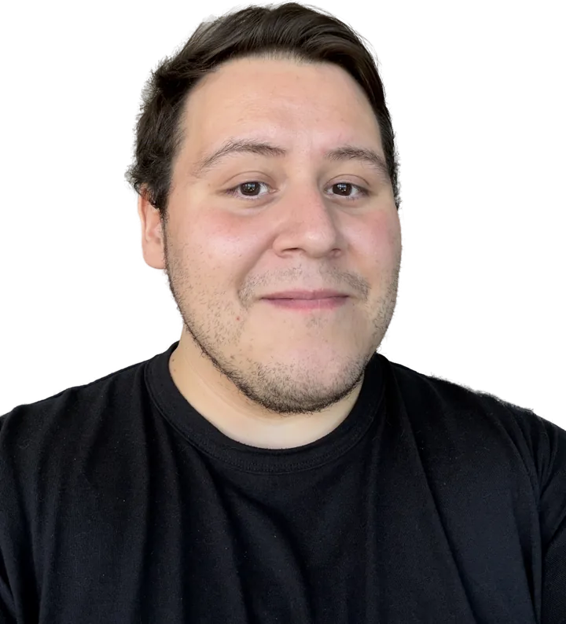

I keep customers in orbit.
For 11+ years I've owned what happens after a client says yes: they get the result they came for, so they stay and grow. I sell and guide the relationship, work out what each request really needs, and shape the product and the team that deliver it. When the goal calls for systems or AI, I build those too.

Everything orbits one thing: the client's goal.
The client
I sell, I retain and I guide. 11+ years of renewals, upsells, hard conversations and onboarding, from 24/7 support floors to global accounts worth $1.5M+ a month. Clients trust me because I tell them what will actually get them there.
The product
Clients say what they want. I work out what they need. My computer engineering degree means I understand how products and features get built, so I can turn a request into a clear spec, tell what's realistic and agree with engineers on what ships first.
The team
Then I shape the people around it: who owns what, how work moves, which playbooks they run. I've led a 150-person operation and hand-picked the Kodara team that now runs the last 90% of every build, the launch and ongoing support.
What it added up to
Monthly revenue from the customer accounts my division was responsible for.
Customers lost per quarter (churn), kept low with an early-warning health score I helped build.
Average review score on G2, Trustpilot and Clutch, out of 5.
Added each quarter, up to $300K, by selling more to customers we already had.
People in the largest team I ran, around the clock.
I usually inherit a problem and leave a system.
The whole build-and-launch process lived with the founder.
I took it over and hand-picked a team that now runs the last 90% of every build, the launch and ongoing support.
Onboarding was manual, slow and depended on one person remembering everything.
A repeatable, partly automated onboarding process the whole team can run.
Customer success mostly meant reacting to tickets and putting out fires.
A practice built around account health: we saw risk coming, stepped in early, and turned healthy accounts into $100K–$300K of growth each quarter.
No shared playbook for how customer success should work.
The company's first customer success framework, co-built with the VP, with health scores and retention playbooks.
Account managers and project managers stepping on each other.
Written procedures for who owns what, and one clear path for clients to raise big issues.
One-off projects that ended when the invoice was paid.
Long-term client relationships, with account management involved from the first meeting.
150+ agents working from one office when the pandemic hit.
Everyone working from home with no break in 24/7 service. The standards I set were adopted across the region.
Where I've done it
Each role is a star system. The job is the star, and everything I did there orbits it.
May 2026 – now
Client Success Manager
Kodara
Kodara builds AI coaching and sales products for clients. I own their outcome end to end: the relationship, what gets built, and the team that delivers it.
Client Success Manager
Kodara builds AI coaching and sales products for clients. I own their outcome end to end: the relationship, what gets built, and the team that delivers it.
- 1Took over the full build-and-launch process from the founder and hand-picked my team. We now own the last 90% of every build, the launch and ongoing support.
- 2Own each client from the first onboarding call: their offer, their marketing plan, weekly updates, and the hard calls on refunds and retention.
- 3Act as the client's voice inside the product team. I turn what clients ask for into clear feature requests and help engineering decide what to build first.
- 4Automated onboarding. Call transcripts import on their own and become first drafts of each client's plan, so the team edits instead of starting from zero.
- 5Designed and built in-house AI toolkits, including a video editing studio, a marketing ops toolkit and an image studio, now used by people across the company.
- 6Test our AI coaching agents before clients see them, with scripted test runs that check every answer.
- 7Build the growth side for clients: sales funnels, Meta ad targeting and AI avatar video ads.
- 8Keep the handoff from sales clean, so nothing a client was promised gets lost.
Oct 2024 – Apr 2026
Account Manager
Plan A Technologies
Turned one-off consulting projects into long-term clients.
Account Manager
Turned one-off consulting projects into long-term clients.
- 1Owned the client relationship on technical consulting work, and turned short audits into long-term build contracts.
- 2Kept business analysts and engineers unblocked so 100+ page roadmaps shipped on time and as promised.
- 3Wrote the company's first procedures for who owns what between account and project managers, with one clear path for escalations.
- 4Senior contact for 20 client accounts, reporting project health straight to the Chief Delivery Officer.
Jul 2020 – Apr 2024
Director of Global Customer Success
Helpware
From individual contributor to one of two global directors in under four years.
Director of Global Customer Success
From individual contributor to one of two global directors in under four years.
- 1Led the small business and emerging enterprise divisions, $1.5M+ in monthly revenue across North America, Europe and Asia.
- 2Co-built the first customer success framework with the VP: health scores and retention playbooks that kept churn under 5% a quarter.
- 3Moved the team from waiting for problems to reaching out first, adding $100K–$300K each quarter from existing customers.
- 4Worked with leadership to lift the company's review scores from 3.0 to 4.5 on G2, Trustpilot and Clutch.
- 5Led 2 account managers directly and coached 8 operations managers and 20 team leads worldwide.
Jul 2018 – Jul 2020
Operations Manager
Alorica
Ran a 150+ person operation through the move to remote work.
Operations Manager
Ran a 150+ person operation through the move to remote work.
- 1Promoted within a year to run one of the site's largest programs, 150+ agents serving US clients.
- 2Owned the program's budget and profit while hitting strict service targets.
- 3Led the 2020 move to working from home and joined every IT call to keep a 24/7 operation running.
- 4Coached 15+ supervisors and team leads, and worked daily with HR, training and quality to bring new hires in smoothly.
Click a role to open its system. Each planet is one thing I did there.